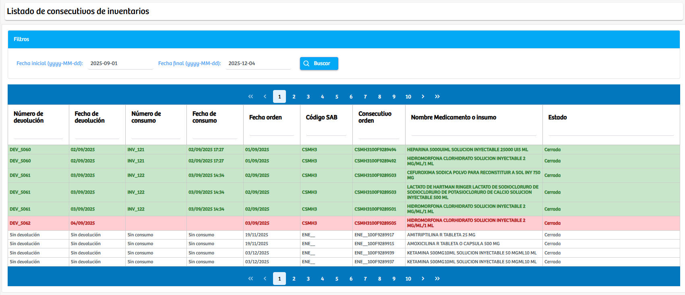

Modulos Sas-Web
Funcionalidades
Listado de Consecutivos
El módulo Listado de Consecutivos permite consultar de manera centralizada todas las órdenes de medicamentos e insumos registradas en el sistema, las cuales son identificadas bajo el concepto de consecutivos. A través de un sistema de filtros por rango de fechas, el usuario puede obtener un historial detallado de movimientos asociados al consumo, devolución y despacho de medicamentos.
La vista presenta información completa para cada consecutivo, incluyendo: número y fecha de devolución (si aplica), número y fecha de consumo, fecha de emisión de la orden, código SAB, consecutivo de orden, descripción del medicamento o insumo, y estado final del proceso. La tabla utiliza colores para facilitar la identificación visual del estado de cada registro, ya sea cerrado, devuelto o pendiente de algún proceso. Este módulo funciona como un visor consolidado que brinda trazabilidad total sobre el ciclo de consumo y devolución de medicamentos, siendo especialmente útil para auditoría, control de inventarios y seguimiento administrativo.